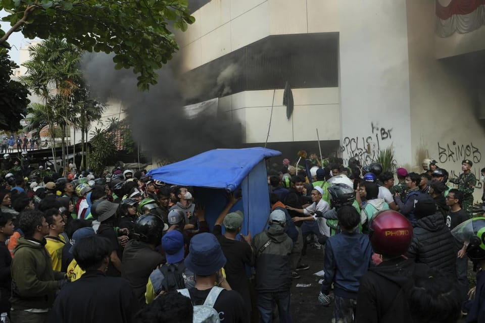

世界苦茶08月30日新闻 | 31条 | 美国联邦巡回法院裁定特朗普关税战非法

美国联邦巡回法院裁定特朗普关税战非法 | 美参议院军事委员会主席访台 | 泰宪法法院裁定总理解职 | 美取消小额包裹免税
SUBSTACK新文章
每日三條新聞解析
苦茶数据
美元兑人民币：7.12（昨日7.12，前日7.14）
美元兑日元：146.82（昨日146.94，前日147.14）
上证指数：3857（昨日792，前日3792）
标普500指数：6501（昨日6481，前日6465）
比特币：109684（昨日112765，前日111399）
布伦特原油：68.18（昨日67.43，前日67.25）
中国新闻
• 中方警告以台制华 ：中国外交部在抗战纪念活动前夕对中美关系和台湾问题表态称，施压胁迫中国行不通、办不到，少数外部势力妄图搞“以台制华”是玩火，“玩火者必自焚”。“中国人民抗日战争暨世界反法西斯战争胜利80周年纪念活动”新闻中心星期五举办记者会，由中国外交部副部长马朝旭介绍外交工作情况。马朝旭说，元首外交在中国特色大国外交中发挥着决定性作用；中共十八大以来，中国国家主席习近平“亲自开展高潮迭起的元首外交”，共出访55次，往访72国，足迹遍布五大洲。
• 美驻华大使或缺席九三 ：知情人士透露，中美关系持续紧张，美国新任驻华大使珀杜预计会缺席中国抗战胜利80周年纪念活动。香港《南华早报》从多方渠道获悉，珀杜很可能下星期三不会出现在北京天安门广场，出席中国人民抗日战争暨世界反法西斯战争胜利80周年纪念活动。不过目前尚不清楚美国驻华大使馆会否派其他官员出席活动。
• 发改委推进统一大市场 ：中国国家发展改革委员会发言人说，将加快治理部分领域的内卷、无序竞争和市场失序等问题，研究制定纵深推进全国统一大市场建设行动方案。中国国家发改委政策研究室副主任、新闻发言人李超星期五在新闻发布会上说，发改委下半年将紧盯重点领域重点任务，加快建设全国统一大市场。李超表示，发改委会研究行动方案，制定纵深推进全国统一大市场建设，并持续推进市场准入壁垒的清理整治行动。
• 中国推城市高质量发展意见 ：中国发布关于推动城市高质量发展的意见，设下到2035年现代化人民城市基本建成的目标。据新华社报道，中国官方在《中共中央 国务院关于推动城市高质量发展的意见》中提到，中国城镇化正从快速增长期转向稳定发展期，城市发展正从大规模增量扩张阶段转向存量提质增效为主的阶段。此意见提出的主要目标为，到2030年，现代化人民城市建设取得重要进展，适应城市高质量发展的政策制度不断完善，新旧动能加快转换，人居品质明显提升，绿色转型深入推进，安全基础有力夯实，文化魅力充分彰显，治理水平大幅提高；到2035年，现代化人民城市基本建成。
• 中方拟助马稀土加工技术 ：马来西亚政府说，中国愿意在稀土加工领域向马国提供技术援助，但仅限于政府相关公司参与。马国天然资源及环境永续部代部长佐哈里星期三在国会以书面回答议员询问时说，中国国家主席习近平今年4月访马时，向首相安华表明愿与马国分享稀土加工技术，但两国至今还未签署任何合作协议。他说，中国非常重视保护相关技术，因此要求相关合作只能透过国有企业进行。“中国在全球稀土元素产业价值链占据主导地位，并禁止出口相关技术以维护主导地位，避免受到美国或其他国家挑战。”
亚太印太新闻
• 台军估陆军演耗资1520亿 ：台湾军方内部报告估计，中国大陆去年在西太平洋地区的军事演习耗资约1520亿元人民币，同比大增近40%，以此衡量北京军事扩张的速度。据路透社报道，台湾军方在本月编制的一份报告中，汇整了对中国大陆在渤海、东中国海、台湾海峡、南中国海和西太平洋军事活动的监视和情报。报告统计了中国大陆去年在上述地区进行的海空任务，并估算每小时活动的燃料和其他消耗成本，也包括维护、修理和薪资在内，总费用高达1520亿元。
• 美参院军委会主席访台 ：美国参议院军委会主席维克星期五抵台后表示，将与盟友洽谈安保事宜。综合路透社和ETtoday新闻云报道，属于美国国会挺台派的维克星期五与同是参院共和党籍参议员的军委会“战略武力”小组主席费雪飞抵台湾，进行两天访问。维克是继凯恩2016年6月率团访台之后，首位参院军委会主席访台。维克上次访台是在2001年，当时他以联邦众议员身份到访。
• 日本上半年出生数创新低 ：日本厚生劳动省发布的人口动态统计数据显示，日本今年上半年出生人口为33.9万人，同比减少3.1%，是1969年有半年可比数据以来同期最低值。星期五发布的数据显示，日本今年上半年出生人口较去年同期减少1.1万人，为33.9万人；死亡人口为83.7万人，较去年同期增加2.5万人，同比增加3.1%；以死亡人口减去出生人口得出的“人口自然减少”为49.8万人。中国新闻社引述数据说，今年上半年日本全国结婚登记数为近23.9万对，较去年同期减少9952对，同比减少4.0%。 （翻評：這可能決定了日本無法真正脫離對移民的依賴。）
• 韩国7月入境客创新高 ：韩国7月接待外国游客173万3199人次，同比增加23.1%，较冠病疫情前的2019年同月增加19.7%。今年前七个月外国游客接待量突破1000万大关。韩联社报道，韩国观光公社星期五说，按国家和地区看，来自中国大陆的游客最多，为60万2147人次，占34.7%。其后依次是日本、台湾、美国和香港等。今年前七个月累计接待外国游客1056万人次，同比增加15.9%，达到2019年同期的106.8%。
• 泰宪法法院罢免佩通坦 ：泰国宪法法院星期五宣布，佩通坦在与柬埔寨前首相洪森的通话中违反道德准则，已遭停职的她将被立即解除首相职务。宪法法院以6比3的投票结果作出上述裁定。这项裁决也解散了佩通坦的内阁。一名法官宣读判决书时指出：“佩通坦的行为导致信任丧失，她将个人利益置于国家利益之上，这加剧了公众对她偏袒柬埔寨的怀疑，并削弱了泰国公民对她担任首相的信心。
• 金正恩或乘专列赴华 ：朝鲜最高领导人金正恩下周在北京出席中国纪念抗战胜利80周年大会，届时乘坐何种交通工具赴华引发关注。韩媒推测，金正恩选择专列的可能性较大。韩国官媒韩联社星期五报道，金正恩自2011年12月执政以来共四次访华，其中2018年3月和2019年1月乘专列出行，行程均为期四天。金正恩2018年5月和6月则改乘专机“苍鹰一号”赴华，行程各为两天。
• 印尼多地爆发反警抗议 ：印度尼西亚多地8月29日爆发反对警察的抗议活动。有报道称，议员每月除工资外还额外获得5000万印尼盾的住房津贴，仅住房津贴就几乎是雅加达最低工资的10倍。批评者认为，在大多数人都努力应对生活成本飙升和失业率上升之际，过高的住房津贴显得麻木不仁。抗议活动25日在全国范围内开展。一名外卖骑手28日在完成订单时被警察的装甲车撞倒。车辆并未停止，反而碾过了骑手。警方的行为引发更大规模的抗议活动。多个城市29日爆发抗议活动。抗议者游行至雅加达的警察机动部队总部。部分人试图冲进大院，警察使用水炮和催泪瓦斯试图击退示威者，示威者投掷瓶子、石块等物品。有部分骚乱者在警察大院附近纵火烧毁一栋五层建筑，导致数人被困。还有抗议者破坏交通标志等基础设施，致使当地交通陷入瘫痪。印尼总统普拉博沃呼吁民众保持冷静，对骑手的死亡表达哀悼。他表示已下令彻查此事。当局证实已有7名警察被拘留和讯问，但司机身份尚未确定。
科技新闻
• 欧盟对谷歌反垄断或小罚款 ：据消息人士透露，欧盟针对美国科技巨头谷歌的一项反垄断行动将在未来数周内迎来结果，谷歌预计将被处以小额罚款。欧盟委员会的该决定源于四年前的一项调查，该调查始于欧洲出版商委员会的投诉。欧盟委员会于2023年正式对谷歌提出指控，称其在广告服务中偏袒自家平台、排挤竞争对手。对谷歌处以小额罚款标志着欧盟反垄断机构的策略转变，现任欧盟反垄断事务负责人特雷莎·里韦拉更注重推动企业结束反竞争行为，而不是其前任玛格丽特·维斯塔格所推崇的巨额罚款。据悉，谷歌本次面临的罚款金额将明显小于之前的处罚。据知情人士透露，里韦拉不会要求谷歌出售部分广告技术业务。
• 美国限制三星、SK海力士在中国制造芯片： 特朗普政府将加大三星电子公司和SK海力士公司向其在华芯片制造业务运送关键设备的难度，这对这两家公司在全球最大半导体市场的生产构成潜在打击。根据周五发布的通知，美国商务部称正在撤销三星和SK海力士在其中国业务中使用美国技术的豁免权。这些半导体公司此前一直依据特定规定在中国运营，该规定允许它们进口芯片制造设备而无需每次都申请新许可证。特朗普政府的举措将修订所谓的 “经验证最终用户” (VEU) 规则，削弱在中国制造芯片的能力，并危及北京获取某些技术的渠道。商务部在宣布该决定的声明中表示，无意授予允许企业在中国制造工厂扩大产能或升级技术的许可证。
财经新闻
• 美取消小额包裹免税 ：美国永久撤销800美元以下小额包裹的免税优惠，星期五起按包裹来源国的对等关税率课税，白宫估计这每年可带来100亿美元的额外关税收入。不过，美国海关一些课税程序尚未明确，促使新加坡和德国、印度、澳大利亚等20多国的邮政业者暂停邮寄包裹到美国。美国海关与边境保护局从美国东部时间星期五零时零1分起，对寄自全球的小额包裹征税。小额包裹征税措施原本自5月起只针对中国大陆和香港，如今扩大范围涵盖全球来源国。
• 德失业破300万通胀抬头 ：德国劳工局星期五公布的数据显示，德国失业人数十年来首次突破300万。路透社报道，8月份德国失业人数总计302万，环比增加4.6万。德国联邦统计局星期五公布的初步数据显示，8月份通胀率升至2.1%，高于预期，这进一步加剧了市场担忧。
• 比亚迪7月欧销增225% ：中国电动车巨头比亚迪7月在欧洲销量同比大增225%，所占欧洲市场份额超过美国电动车巨头特斯拉。欧洲汽车制造商协会星期四在网站公布的最新数据显示，比亚迪7月在欧盟国家、英国和欧洲自贸协会的非欧盟国家中，新车注册量达1万3503辆，同比上升225.3%。新车注册量通常能反映销量表现。今年1月至7月，比亚迪在欧洲市场新车注册量同比增长近300%，市场份额7月跃升至1.2%。
• 中芯国际营收净利双增 ：中国晶片制造巨头中芯国际公告最新业绩，今年上半年实现营业收入约323亿4800万元人民币，同比增长23.1%；实现归属于上市公司股东的净利润约23.01亿元，同比增长39.8%。中芯国际星期四发布公告，显示这家A股上市公司上半年的晶圆代工业务收入约303亿5300万元，同比增加25.9%。针对上半年的经营情况，中芯国际表示，2025年上半年，智能手机市场稳中有增，个人电脑市场换机周期开启、销量增长；消费电子、智能穿戴等设备受端侧人工智能驱动，市场持续稳健扩张。
• 美对印加税施压引外交博弈 ：美国以印度“向俄罗斯买更多石油”为由，将印度商品关税倍增至50%后进一步施压，试图迫使印度接受对美方有利的贸易协议。受访学者认为，美国总统特朗普打错了算盘，把好伙伴推向敌人，印度总理莫迪星期天访问中国时可能与中国国家主席习近平和俄罗斯总统普京举行三边非正式会面。美国对印度商品征收50%关税周三生效。同一天，白宫贸易顾问纳瓦罗接受《彭博电视》访问时试图进一步对印度施压，称俄乌战争“是莫迪的战争，通往和平的道路部分须经过新德里”。纳瓦罗称，印度以折扣价向俄罗斯买油，俄罗斯则把收入用于战争，杀害更多乌克兰人，也导致美国须为乌克兰提供武器和资金，耗损美国的资源。
• 华为上半年净利下滑 ：华为技术有限公司今年上半年净利润下降近三分之一，尽管收入有所增长。根据这家非上市公司周五公布数据，净利润从去年同期的546.4亿元人民币降至370.5亿元人民币。收入增长3.9%，至4270.4亿元人民币。华为表示，公允价值变动产生的损失从3530万元人民币扩大至58.4亿元人民币。该公司在财报中没有详细说明利润下降的原因。这家消费电子巨头在今年前六个月还发行了五期超短期融资券。这一数量与该公司2023年发行的债券数量持平，超过了2022年和2024年的发行量。今年二月，该公司表示正与国企上汽集团合作，建立一个新的电动汽车品牌。
俄乌战争
• 美售乌增程空射导弹 ：美国星期四批准向乌克兰出售价值8.25亿美元的3350枚增程攻击弹药空射导弹及相关设备。法新社报道，美国国防安全合作局在一份声明中说，基辅将利用丹麦、荷兰和挪威的援助资金以及美国的贷款担保完成此次采购。DSCA说：“这将增强乌克兰应对当前和未来威胁的能力，使其能够执行自卫和区域安全任务。”
• 泽连斯基促升级安保谈判 ：乌克兰总统泽连斯基星期五说，西方盟友就乌克兰安全保障的讨论应“紧急”提升至领导人级别，美国总统特朗普也应参与其中。路透社报道，乌克兰官员寻求基辅的盟友做出强有力的承诺，将安全保障的内容加入俄乌的和平协议。目前，俄乌战争已进入第四个年头。泽连斯基在基辅对记者说，他预计下周将继续与欧洲领导人就类似北约的承诺进行讨论。
• 白宫称俄乌恐未准备停战 ：美国白宫说，总统特朗普对俄罗斯星期四凌晨大规模空袭乌克兰首都基辅感到不高兴，但并不觉得意外，暗示俄乌双方可能都不想结束战争。路透社报道，白宫新闻秘书莱维特在例行简报会说，俄罗斯和乌克兰已交战很长时间，“或许交战双方还不准备自行结束战争”。她说，俄罗斯的空袭造成人员伤亡，乌克兰本月的袭击行动对俄罗斯炼油厂造成重大破坏。“总统希望这场战争结束，但这两国领导人本身必须有这个希望和决心。”
• 俄罗斯各地区预算超支 reportedly 飙升至300%： 俄罗斯克麦罗沃州原预计全年收支差额为1.7亿美元，但到1–7月，赤字已达到3.8亿美元。主要原因是西方对俄罗斯煤炭的制裁以及冶金产品需求疲软。在巴什科尔托斯坦共和国，赤字在4月就已翻倍至8400万美元。萨哈共和国记录下严重超支：上半年实际开支超过原计划的300%。罗斯托夫州原本预计全年有盈余，但到年底预计将被修正为2.42亿美元的赤字。声明指出：“与此同时，当地政府正积极报告增加一次性支付，用于向与俄国防部签订合同、参加对乌战争的志愿兵发放补助。”
• 特朗普 reportedly 支持普京提出的在乌克兰部署中国维和部队的想法： 据报道，美国总统唐纳德·特朗普首次支持了俄罗斯总统普京提出的在乌克兰部署中国维和部队的想法。然而，《金融时报》报道，白宫否认此事。消息人士告诉该报，特朗普据称支持向乌克兰派遣中国维和人员的设想。上周，他在白宫与乌克兰总统泽连斯基会晤时，提出派遣中国军人前往乌克兰，在长达1300公里的前线设置中立区并加以监督据消息人士称，欧洲领导人和乌克兰总统都拒绝了该计划。此前，泽连斯基和欧洲方面都指出，中国为俄罗斯政权在战争中提供了至关重要的支持。白宫方面则表示这不属实。官员称，特朗普并未提议派遣中国维和部队前往乌克兰。一位高级官员告诉该报：“这是假的”，“没有讨论过中国维和部队。”
国际新闻
• 美国联邦巡回上诉法院8月29日以7比4的投票结果裁定，特朗普援引的《国际紧急经济权力法》并未授权他对多国征收关税的权力，维持了之前下级法院的裁决： 裁决书说，《国际紧急经济权力法》授权总统在紧急情况下颁布某些经济措施，以应对“异常和特殊威胁”，但不允许总统采取全面行动。《国际紧急经济权力法》授予总统监管进口的权力，但并不意味着授权总统通过发布行政命令征收关税。裁决称，征收关税是宪法赋予立法部门的“国会核心权力”，国会在起草《国际紧急经济权力法》时并未使用“关税”及其同义词，这与国会明确授予此类权力的法规形成鲜明对比。因此，特朗普如果想合法征收关税，必须获得国会的明确授权。根据裁决书，该裁决10月14日之前不会生效，以便特朗普政府向美国最高法院提出上诉。裁决发布后，特朗普发文坚称“所有关税仍然有效”，如果取消对美国来说是一场“彻底的灾难”，将向最高法院提出上诉。白宫发言人表示，特朗普的行为是合法的，期待赢得最终胜利。 （翻評：最高院的這個判決關鍵了。雖然結果大概率是賦予特朗普這個權力。）
• 以色列寻获两名人质遗体 ：以色列总理内坦亚胡办公室星期五说，以色列已在加沙地带找到人质伊兰·韦斯的遗体。路透社报道，声明补充说，以色列还找到了第二名人质的遗体，其姓名尚未公布。以色列军方称，55岁的韦斯来自南部贝里基布兹，他在2023年10月7日哈马斯的跨境袭击中在家中被绑架并杀害。
• 德国敦促公民撤离伊朗 ：德国敦促公民离开伊朗，并避免前往伊朗，以免因德国对伊朗启动“快速恢复制裁”而遭伊朗报复。路透社报道，英国、法国、德国星期四通知联合国安理会，启动“快速恢复制裁”机制，如果安理会未能在30天内就延长对伊制裁豁免期限通过决议，相关制裁将恢复。此举可能会加剧紧张局势，而以色列和美国两个月前曾轰炸伊朗。同日，德国外交部网站发表声明说：“鉴于伊朗政府代表已多次威胁将采取报复措施，我们无法排除德国在伊朗的利益和公民被伊朗反制措施波及的可能性。”
• 美拒巴官员联大发签证 ：美国特朗普政府星期五宣布，不会向希望前往纽约参加9月联合国大会的巴勒斯坦高级官员发放签证，并将撤销此前已发放的签证。美国新闻网Axios报道，一名国务院官员证实，巴勒斯坦总统阿巴斯及其他约80名官员也不会取得美国签证。报道指美国的这一举动，是为回应一些西方国家计划在联合国大会期间承认巴勒斯坦国的倡议，这凸显了在针对加沙地带和巴勒斯坦的政策上，美国和以色列与世界上几乎所有其他国家形成对立。
• 特朗普通知撤销哈里斯警护 ：美国总统特朗普撤销了对前民主党副总统哈里斯特勤局保护。根据美国有线电视新闻网获得的一封信函副本，特朗普星期四撤销美国特勤局对哈里斯的保护。这封信由特朗普写给国土安全部长，题为《致国土安全部长的备忘录》。路透社报道，一名白宫官员星期五说，特朗普政府已撤销对哈里斯的安全保护。
• 新发现文件增添证据，都灵裹尸布并非耶稣受难裹尸布： 一份新出土的文件提供了有力且迄今最古老的证据，显示长期被认为是耶稣基督下葬裹尸布的都灵裹尸布实际上是“一场神职人员的欺诈”。都灵裹尸布是最受珍视的古代遗物之一，吸引了无数游客前往意大利都灵市——尽管当地的圣若翰洗者大教堂只在特定场合公开展出。它也被称为“圣裹尸布”，是一块亚麻布，上面带有一个裸体男子正反面的淡淡影像。信徒们几个世纪以来一直将其奉为耶稣的裹尸布——据说耶稣在受难后，其形象印在了这块布上。然而自1354年裹尸布首次出现以来，真伪就一直受到质疑。梵蒂冈当局也多次反复犹豫是否应将其视为耶稣的真实裹尸布。多年间的进一步研究不断增加了其不真实的证据。如今，一份新发现的中世纪文献再次证明了该裹尸布是伪造品。确实，这份此前未知的文件可追溯到14世纪，它提供了对这块著名的14英尺裹尸布最早的否定之一，并且是迄今发现的最古老的书面证据。此前已知的最早记载是一封1389年由特鲁瓦主教皮埃尔·达尔西斯所写的信，他同样将裹尸布斥为骗局。这份新发现的书面文件显示，一位备受尊敬的法国神学家尼古拉·奥雷姆曾将这块布描述为“明显的”和“公然的”伪造品——是12世纪中叶“神职人员”欺骗的结果。奥雷姆写道：“我不需要相信任何人所说的‘某人曾为我行此奇迹’，因为许多神职人员就是这样欺骗他人，以便为他们的教堂募集捐献。”他接着写道：“这在香槟地区的一座教堂里就是显而易见的，他们声称那里保存着主耶稣基督的裹尸布。而几乎无数人都伪造过类似的东西，以及其他造假。”